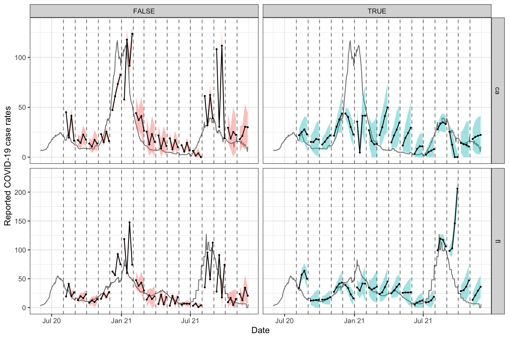

In this vignette, we discuss how to use the sliding functionality in the epiprocess package with computations that have advanced output structures.
In general, the functions epi_slide() and epix_slide() do what they can to make the result of a slide operation size stable, meaning, it will return something whose length is the same as the size of the input data frame (or data table, for epix_slide()), or, in the case that ref_time_values is specified, the same as the number of appearances of the references time values in the input data frame (or data table).
The output of a slide computation should either be an atomic value/vector, or a data frame. This data frame can have multiple columns, multiple rows, or both. Below we demonstrate how to accomplish some advanced behavior with these output structures. We focus on epi_slide() for the most part, though the behavior we demonstrate also carries over to epix_slide().
When a computation returns a single atomic value, epi_slide() will internally try to recycle the output so that it is size stable (in the sense described above). We can use this to our advantage, for example, in order to compute a trailing average marginally over geo values, which we demonstrate below with a simple synthetic example.
library(epiprocess) library(dplyr) df <- tibble( geo_value = rep(c("ca", "fl", "pa"), each = 3), time_value = rep(seq(as.Date("2020-06-01"), as.Date("2020-06-03"), by = "day"), length.out = length(geo_value)), x = 1:length(geo_value) + 0.01 * rnorm(length(geo_value)), ) %>% as_epi_df() # 2-day trailing average, per geo value df %>% group_by(geo_value) %>% epi_slide(x_2dav = mean(x), n = 2)
## An `epi_df` object, with metadata:
## * geo_type = state
## * time_type = day
## * as_of = 2022-02-21 22:40:36
##
## # A tibble: 9 × 4
## # Groups: geo_value [3]
## geo_value time_value x x_2dav
## * <chr> <date> <dbl> <dbl>
## 1 ca 2020-06-01 0.999 0.999
## 2 ca 2020-06-02 2.00 1.50
## 3 ca 2020-06-03 2.99 2.49
## 4 fl 2020-06-01 3.99 3.99
## 5 fl 2020-06-02 5.00 4.50
## 6 fl 2020-06-03 5.99 5.50
## 7 pa 2020-06-01 7.00 7.00
## 8 pa 2020-06-02 8.01 7.51
## 9 pa 2020-06-03 9.00 8.51## An `epi_df` object, with metadata:
## * geo_type = state
## * time_type = day
## * as_of = 2022-02-21 22:40:36
##
## # A tibble: 9 × 4
## geo_value time_value x x_2dav
## * <chr> <date> <dbl> <dbl>
## 1 ca 2020-06-01 0.999 4.00
## 2 fl 2020-06-01 3.99 4.00
## 3 pa 2020-06-01 7.00 4.00
## 4 ca 2020-06-02 2.00 4.50
## 5 fl 2020-06-02 5.00 4.50
## 6 pa 2020-06-02 8.01 4.50
## 7 ca 2020-06-03 2.99 5.50
## 8 fl 2020-06-03 5.99 5.50
## 9 pa 2020-06-03 9.00 5.50When the slide computation returns an atomic vector (rather than a single value) then epi_slide() checks whether its return length ensure size stability, and if so, uses it to fill the new column. For example, this next computation gives the same results as the last one.
## An `epi_df` object, with metadata:
## * geo_type = state
## * time_type = day
## * as_of = 2022-02-21 22:40:36
##
## # A tibble: 9 × 4
## geo_value time_value x y_2dav
## * <chr> <date> <dbl> <dbl>
## 1 ca 2020-06-01 0.999 4.00
## 2 fl 2020-06-01 3.99 4.00
## 3 pa 2020-06-01 7.00 4.00
## 4 ca 2020-06-02 2.00 4.50
## 5 fl 2020-06-02 5.00 4.50
## 6 pa 2020-06-02 8.01 4.50
## 7 ca 2020-06-03 2.99 5.50
## 8 fl 2020-06-03 5.99 5.50
## 9 pa 2020-06-03 9.00 5.50However, if the output is an atomic vector (rather than a single value) and it is not size stable, then epi_slide() throws an error.
# This should fail (trying to return 2 things for 3 states) df %>% epi_slide(x_2dav = rep(mean(x), 2), n = 2)
## Error: If the slide computations return atomic vectors, then they must each have a single element, or else one element per appearance of the reference time value in the local window.Now we move on to outputs that are data frames with a single row but multiple columns. Working with this type of output structure has in fact has already been demonstrated in the slide vignette. When we set as_list_col = TRUE in the call to epi_slide(), the ultimate epi_df object has a list column containing the slide values.
df2 <- df %>% group_by(geo_value) %>% epi_slide(a = data.frame(x_2dav = mean(x), x_2dma = mad(x)), n = 2, as_list_col = TRUE) class(df2$a)
## [1] "list"length(df2$a)
## [1] 9df2$a[[1]]
## x_2dav x_2dma
## 1 0.9987703 0When we use as_list_col = FALSE (the default in epi_slide()), the function unnests (in the sense of tidyr::unnest()) the list column a, so that the resulting epi_df has multiple new columns with the slide values.
df %>% group_by(geo_value) %>% epi_slide(a = data.frame(x_2dav = mean(x), x_2dma = mad(x)), n = 2, as_list_col = FALSE)
## An `epi_df` object, with metadata:
## * geo_type = state
## * time_type = day
## * as_of = 2022-02-21 22:40:36
##
## # A tibble: 9 × 5
## # Groups: geo_value [3]
## geo_value time_value x a_x_2dav a_x_2dma
## * <chr> <date> <dbl> <dbl> <dbl>
## 1 ca 2020-06-01 0.999 0.999 0
## 2 ca 2020-06-02 2.00 1.50 0.740
## 3 ca 2020-06-03 2.99 2.49 0.737
## 4 fl 2020-06-01 3.99 3.99 0
## 5 fl 2020-06-02 5.00 4.50 0.752
## 6 fl 2020-06-03 5.99 5.50 0.735
## 7 pa 2020-06-01 7.00 7.00 0
## 8 pa 2020-06-02 8.01 7.51 0.750
## 9 pa 2020-06-03 9.00 8.51 0.729We can use names_sep = NULL (which gets passed to tidyr::unnest()) to drop the prefix associated with list column name, in naming the new epi_df columns.
df %>% group_by(geo_value) %>% epi_slide(a = data.frame(x_2dav = mean(x), x_2dma = mad(x)), n = 2, as_list_col = FALSE, names_sep = NULL)
## An `epi_df` object, with metadata:
## * geo_type = state
## * time_type = day
## * as_of = 2022-02-21 22:40:36
##
## # A tibble: 9 × 5
## # Groups: geo_value [3]
## geo_value time_value x x_2dav x_2dma
## * <chr> <date> <dbl> <dbl> <dbl>
## 1 ca 2020-06-01 0.999 0.999 0
## 2 ca 2020-06-02 2.00 1.50 0.740
## 3 ca 2020-06-03 2.99 2.49 0.737
## 4 fl 2020-06-01 3.99 3.99 0
## 5 fl 2020-06-02 5.00 4.50 0.752
## 6 fl 2020-06-03 5.99 5.50 0.735
## 7 pa 2020-06-01 7.00 7.00 0
## 8 pa 2020-06-02 8.01 7.51 0.750
## 9 pa 2020-06-03 9.00 8.51 0.729Furthermore, epi_slide() will recycle the single row data frame as needed in order to make the result size stable, just like the case for atomic values.
df %>% epi_slide(a = data.frame(x_2dav = mean(x), x_2dma = mad(x)), n = 2, as_list_col = FALSE, names_sep = NULL)
## An `epi_df` object, with metadata:
## * geo_type = state
## * time_type = day
## * as_of = 2022-02-21 22:40:36
##
## # A tibble: 9 × 5
## geo_value time_value x x_2dav x_2dma
## * <chr> <date> <dbl> <dbl> <dbl>
## 1 ca 2020-06-01 0.999 4.00 4.43
## 2 fl 2020-06-01 3.99 4.00 4.43
## 3 pa 2020-06-01 7.00 4.00 4.43
## 4 ca 2020-06-02 2.00 4.50 3.71
## 5 fl 2020-06-02 5.00 4.50 3.71
## 6 pa 2020-06-02 8.01 4.50 3.71
## 7 ca 2020-06-03 2.99 5.50 3.72
## 8 fl 2020-06-03 5.99 5.50 3.72
## 9 pa 2020-06-03 9.00 5.50 3.72For a slide computation that outputs a data frame with more than one row, the behavior is analogous to a slide computation that outputs an atomic vector. Meaning, epi_slide() will check that the result is size stable, and if so, will fill the new column(s) in the resulting epi_df object appropriately.
This can be convenient for modeling in the following sense: we can, for example, fit a sliding forecasting model by pooling data from different locations, and then return separate forecasts from this common model for each location. We first use our synthetic example to demonstrate this abstractly but simply.
df$y <- 2 * df$x + 0.05 * rnorm(length(df$x)) df %>% epi_slide(function(df, time_value) { obj <- lm(y ~ x, data = df) return( as.data.frame( predict(obj, newdata = df %>% group_by(geo_value) %>% filter(time_value == max(time_value)), interval = "pred", level = 0.9) )) }, n = 2, new_col_name = "fc", names_sep = NULL)
## An `epi_df` object, with metadata:
## * geo_type = state
## * time_type = day
## * as_of = 2022-02-21 22:40:36
##
## # A tibble: 9 × 7
## geo_value time_value x y fit lwr upr
## * <chr> <date> <dbl> <dbl> <dbl> <dbl> <dbl>
## 1 ca 2020-06-01 0.999 1.98 1.98 1.91 2.05
## 2 fl 2020-06-01 3.99 7.99 7.98 7.93 8.04
## 3 pa 2020-06-01 7.00 14.0 14.0 14.0 14.1
## 4 ca 2020-06-02 2.00 4.00 3.99 3.94 4.03
## 5 fl 2020-06-02 5.00 9.98 10.0 9.96 10.1
## 6 pa 2020-06-02 8.01 16.0 16.0 16.0 16.1
## 7 ca 2020-06-03 2.99 6.14 6.03 5.85 6.21
## 8 fl 2020-06-03 5.99 12.0 12.0 11.9 12.2
## 9 pa 2020-06-03 9.00 18.1 18.0 17.8 18.2Next, we recall the COVID-19 forecasting example from the archive vignette in order to demonstrate this in a more grounded way. Note that, because epix_slide() only returns the grouping variables, time_value, and the slide computations in the eventual returned tibble, we must include geo_value in the output data frame from our slide computation when we don’t group by it (as in this case), provided we want it to appear in the returned tibble.
library(covidcast) library(data.table) library(ggplot2) theme_set(theme_bw()) # Fetch CLI and COVID case rates y <- covidcast_signals(c("doctor-visits", "jhu-csse"), c("smoothed_adj_cli", "confirmed_7dav_incidence_prop"), start_day = "2020-06-01", end_day = "2021-12-01", issues = c("2020-06-01", "2021-12-01"), geo_type = "state", geo_values = c("ca", "fl")) # Wrangle into an epi_archive x <- y[[1]] %>% select(geo_value, time_value, version = issue, percent_cli = value) %>% as_epi_archive() epix_merge(x, y[[2]] %>% select(geo_value, time_value, version = issue, case_rate = value) %>% as_epi_archive(), all = TRUE) # Extend ARX to handle multiple geos prob_arx <- function(x, y, geo_value, time_value, lags = c(0, 7, 14), ahead = 7, min_train_window = 20, lower_level = 0.05, upper_level = 0.95, symmetrize = TRUE, nonneg = TRUE) { # Return NA if insufficient training data if (length(y) < min_train_window + max(lags) + ahead) { return(data.frame(point = NA, lower = NA, upper = NA)) } # Useful transformations if (!missing(x)) x <- data.frame(x, y) else x <- data.frame(y) if (!is.list(lags)) lags <- list(lags) lags = rep(lags, length.out = ncol(x)) # Build features and response for the AR model, and then fit it dat <- do.call( data.frame, unlist( # Below we loop through and build the lagged features purrr::map(1:ncol(x), function(i) { purrr::map(lags[[i]], function(lag) dplyr::lag(x[,i], n = lag)) }), recursive = FALSE ) ) dat$y <- dplyr::lead(y, n = ahead) obj <- lm(y ~ ., data = dat) # Use LOCF to fill NAs in the latest feature values, make a prediction data.table::setnafill(dat, type = "locf") dat <- cbind(dat, data.frame(geo_value, time_value)) point <- predict(obj, newdata = dat %>% dplyr::group_by(geo_value) %>% dplyr::filter(time_value == max(time_value))) # Compute a band r <- residuals(obj) s <- ifelse(symmetrize, -1, NA) # Should the residuals be symmetrized? q <- quantile(c(r, s * r), probs = c(lower_level, upper_level), na.rm = TRUE) lower <- point + q[1] upper <- point + q[2] # Clip at zero if we need to, then return if (nonneg) { point = pmax(point, 0) lower = pmax(lower, 0) upper = pmax(upper, 0) } return(data.frame(geo_value = unique(geo_value), # Must include geo value! point = point, lower = lower, upper = upper)) } # Next make forecasts on the archive and compare to forecasts on latest data x_latest <- epix_as_of(x, max_version = max(x$DT$version)) fc_time_values <- seq(as.Date("2020-08-01"), as.Date("2021-12-01"), by = "1 month") k_week_ahead <- function(x, ahead = 7, as_of = TRUE) { if (as_of) { x %>% epix_slide(fc = prob_arx(percent_cli, case_rate, geo_value, time_value, ahead = ahead), n = 120, ref_time_values = fc_time_values) %>% mutate(target_date = time_value + ahead, as_of = TRUE, geo_value = fc_geo_value) } else { x_latest %>% epi_slide(fc = prob_arx(percent_cli, case_rate, geo_value, time_value, ahead = ahead), n = 120, ref_time_values = fc_time_values) %>% mutate(target_date = time_value + ahead, as_of = FALSE) } } # First generate the forecasts, and bind them together fc <- bind_rows(k_week_ahead(x, ahead = 7, as_of = TRUE), k_week_ahead(x, ahead = 14, as_of = TRUE), k_week_ahead(x, ahead = 21, as_of = TRUE), k_week_ahead(x, ahead = 28, as_of = TRUE), k_week_ahead(x, ahead = 7, as_of = FALSE), k_week_ahead(x, ahead = 14, as_of = FALSE), k_week_ahead(x, ahead = 21, as_of = FALSE), k_week_ahead(x, ahead = 28, as_of = FALSE)) # Now plot them, on top of latest COVID-19 case counts p <- ggplot(fc, aes(x = target_date, group = time_value, fill = as_of)) + geom_ribbon(aes(ymin = fc_lower, ymax = fc_upper), alpha = 0.4) + geom_line(aes(y = fc_point)) + geom_point(aes(y = fc_point), size = 0.5) + geom_vline(aes(xintercept = time_value), linetype = 2, alpha = 0.5) + facet_grid(vars(geo_value), vars(as_of), scales = "free") + scale_x_date(minor_breaks = "month", date_labels = "%b %y") + labs(x = "Date", y = "Reported COVID-19 case rates") + theme(legend.position = "none") gginnards::append_layers( p, geom_line(data = x_latest, aes(x = time_value, y = case_rate), inherit.aes = FALSE, color = "gray50"), pos = "bottom")
